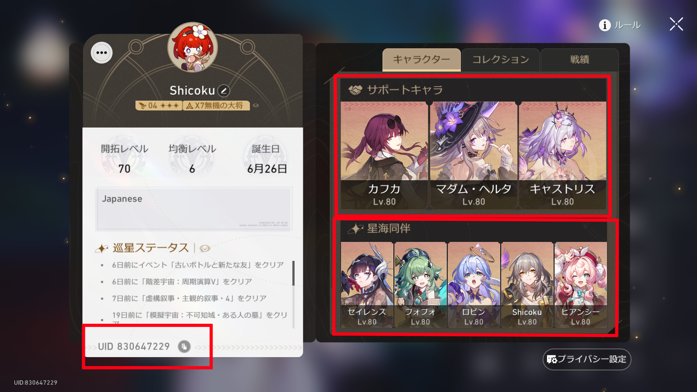
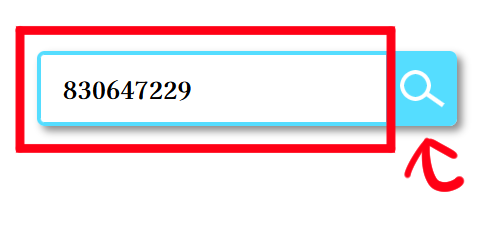
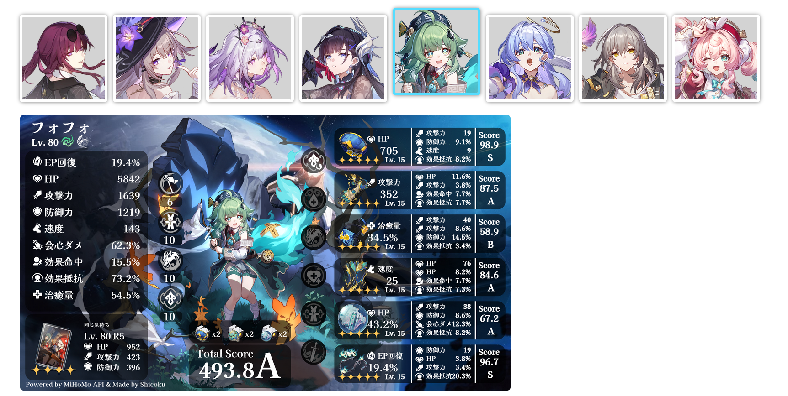

使い方
ゲーム側の設定を行います。以下の画像の右側の赤線にサポート、同伴キャラをそれぞれ3人、5人設定します。

設定が完了したら、左下のUIDをコピーしましょう。
テキストボックス内にコピーしたUIDを入力し、検索ボタンを押しましょう。

プレイヤー情報やキャラクター情報が取得され、サポート、同伴に設定したキャラの一覧が表示されます。
ビルドカードを生成したいキャラのアイコンを押すことでビルドカードを生成できます。

ビルドカードは右クリックまたは長押しで保存・コピーが可能です。
ビルドカードを生成する場合は、必ず利用規約に同意のうえご利用ください。
また、使用時には以下のことに注意してください。
本サービスでは以下のような計算式を使用しています。
メインステータス
\( \text{スコア} = (\text{遺物のレベル} + 1) \div 16 \times \text{重要度} \times 100 \)
サブステータス
\( \text{スコア} = \text{値} \div \text{理論上の最大値} \times \text{重要度} \times 100 \)
最終的なスコア
\( \text{遺物スコア} = \text{メインスコア} \times 0.5 + \text{サブスコア} \times 0.5 \)
スコアの評価については以下の表を参照してください。
| 評価 | 遺物 | 総合 |
|---|---|---|
| SS | 100 ~ | 600 ~ |
| S | 90 ~ | 540 ~ |
| A | 60 ~ | 360 ~ |
| B | 40 ~ | 240 ~ |
| C | 10 ~ | 60 ~ |
| D | 0 ~ | 0 ~ |